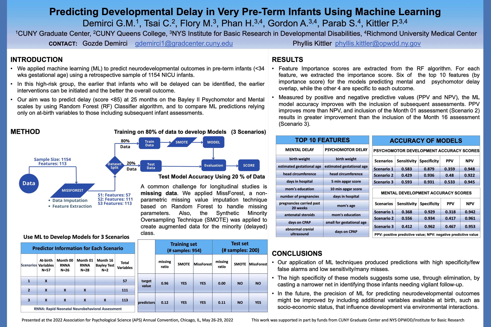

- Weakly Supervised Segmentation
- With a given weaker supervision (e.g. image level labels) we segment lesion area on tissue.
- Semi Supervised Segmentation
- By using only a few annotated data, our aim is to create segmentations accurately.
- Longitudinal Neurobehavioral Prediction (??)
- From a long temporal data, we study to early detect on infants' neurobehavioral delays.
-
Predicting Developmental Delay in Very Pre-Term Infants Using Machine LearningGozde Demirci, Charlene Tsai, Michael Flory, Phan Ha, Anne Gordon, Phyllis KittlerAPS 2022
-
Published paper/poster's title here
Charlene Tsai, authors order will be followed.conference name and year
-
Test Project Name 20XX - 20XX